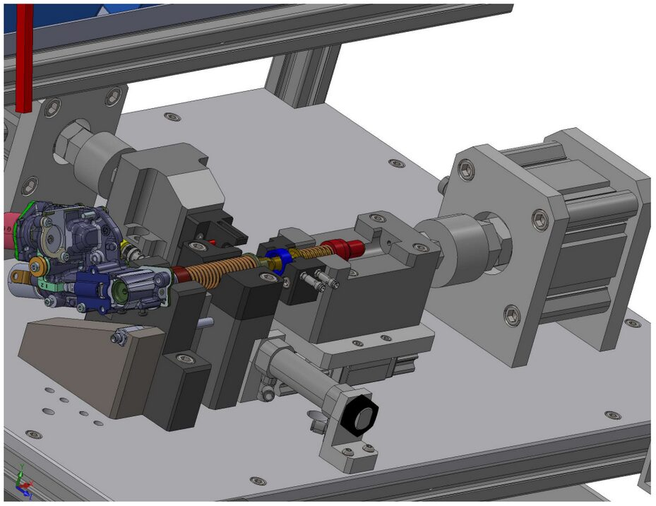
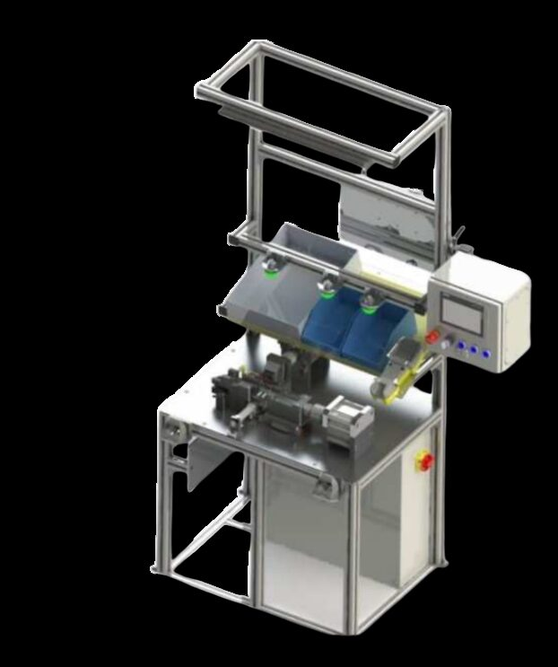

Tremec needed to automate a manual assembly step joining a plunger and Park Lock Valve (PLV) with a dowel pin and retaining ring. I designed, built and programmed the replacement station, with full Datamatrix part traceability feeding directly into Tremec's existing traceability system.
A pneumatically actuated press station inserts a dowel pin and retaining ring joining the plunger and PLV, with fixation verified cycle-to-cycle by a digital probe measurement. Datamatrix codes are read and pushed into Tremec's traceability system through PLC logic.

